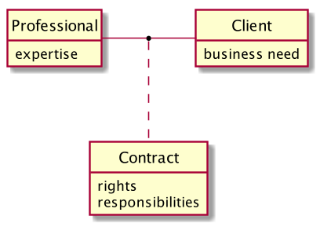

Professionalism - Learning at Work
When any professional offers their services for payment then they necessarily enter into a two-way contract with their client, either written, verbal or implied. A written contract would set out the expectations of each party but many times it’s partially or completely assumed based on a (hopefully) common understanding. In any case its terms will vary according to the nature of the work being undertaken.
In the debate about when the professional software engineer should practice their craft, that is if it should be expected of the employer to provide training or whether the professional should hone their skills outside of working hours1, both sides seem to ignore the fact that any expectation that the professional may have of their employer, or the employer of the professional, is defined by their relationship, not by either individually.
1 For example Uncle Bob in his book Clean Coder by Robert C. Martin he says "You should plan on working 60 hours a week. The first 40 are for your employer. The remaining 20 are for you. During this remaining 20 hours you should be reading, practicing, learning, and otherwise enhancing your career."
This is clear if we recognise that a single professional may have multiple relationships simultaneously with different clients or employers, each with their own terms and expectations. The employer likewise, even more so.
We need to talk not so much about the actors (professionals, clients, employers, etc.) in isolation but rather the expectations and relationships between them.
For example, if you work as a freelance contractor then, in addition to your time, you will probably be contracted explicitly to provide some kind of expertise. It would be inappropriate, i.e. incompatible with your contract, for you to ask for training in that same area of expertise2. If, however, you need to work with some in-house software with which you have no experience and, importantly, that expertise was not expected of you, then here too training on the job is fully compatible with your contract.
2 Image you’ve privately contracted a doctor to treat some specific condition and he then asks for training. Jikes.
On the other hand if you work as an employee for a company then you will have been employed with a given set of skills (ascertained by tests or interviews) for a given amount of hours to fulfil a specific job title. You should not be necessarily expected to know things outside this agreement but, on the other hand, your employer has the right to use your working time as they see fit within that role. If that includes training then that is completely compatible with your contract, because you were probably not contracted for anything that you didn’t already know and you can even reasonably ask for training if you believe you need it to be effective in your role. It may also make business sense for you to be given training for motivational reasons.
As a third option, you may be subcontracted by an agency in which case there are three simultaneous relationships in play: - you and the end client - you and the agency - the agency and the end client
The first is your day-to-day reality however things often actually go wrong because the second and third are not in sync. In my professional career I have been asked by agencies to lie about my expertise to satisfy their contract. This is unfortunately quite widespread but in my opinion totally unethical3. Professional ethics in this area is something we should be seriously addressing as an industry.
3 Software codes of ethics already exist but no-one seems to pay them the blind bit of notice.
As a last point, if you enjoy your job, as I do, and have an interest in developing your skills and professionalism then you will want to practice and study in you own time, i.e. outside of any existing professional relationships, to help you progress both professionally and personally. If you have a family and other commitments then you may not be able to do this. This is your decision and does not make you any less professional in the workplace.
In contrast, I have seen many many examples of so-called professionals using a project as a springboard for new skills. I call this CV-oriented-development and is effectively using someone else’s resources for your own personal gain. A professional should not choose a technology for a project because they want to learn it. They should choose it because they know that it will provide value to their client/employer and that they can provide the expertise to implement it correctly. Similarly, in my opinion it is unprofessional (and even unethical, again) to use a technology which will be hard for the client to maintain if you leave and may therefore not provide long-term business value, unless, of course, the ramifications have been explained and agreed.
In conclusion, software engineers work with different employers and clients in different ways. Whether not to study outside of work depends on your own personal circumstances but, in my personal opinion, it is not a requirement of professionalism but rather a means for your own professional and personal advancement. On the other hand, your employer does not necessarily have a responsibility to provide you training either but they may well decide to do so if it provides value to them, which it often does, or because it’s part of the contract you have with them, which it often is.
As an aside, the concept of a contract between professional and client can be abstractly modelled in UML by an association class4. The lengthy description above could be represented visually in a diagram like this:
4 Here we are using a model as a thinking tool, a kind of gedankenmodell, not as a software design.

It makes explicit the difference between a property and a quality, the Contract representing the qualification of a relationship between two other entities with its own independent properties. There is an important distinction between this definition of a contract and the one sometimes used where a service provider defines a contract which the client must accept and abide by.
In my experience these kinds of models are underused in the wild, I guess that’s maybe because they are seen as slightly awkward to implement in object oriented languages, although they are natural in relational databases. I’d be interested in hearing about more real-world examples.